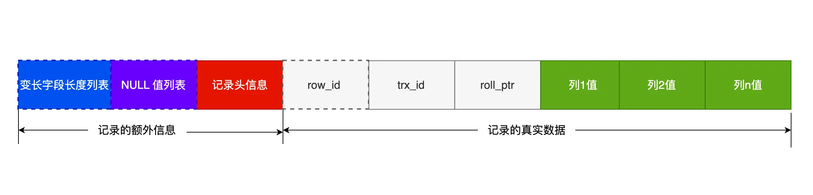

1. MySQL 基础⚓
1.1 执行一条 select 语句，期间发生了什么⚓
1.1.1 MySQL 执行流程⚓

MySQL 的架构共分为两层：Server 层和存储引擎层：
- Server 层负责建立连接，分析和执行SQL。MySQL大多数核心功能在这里实现，主要包括连接器、查询缓存、解析器、预处理器、优化器和执行器。另外，所有内置函数（如日期、时间、数学和加密函数等） 和 跨存储引擎的功能（如存储过程、触发器、视图等）都在此实现。
- 存储引擎层负责数据的提取和存储。支持 InnoDB、MyISAM、Memory 等多个存储引擎，不同的存储引擎共用一个 Server 层。从 MySQL 5.5 版本开始，InnoDB 成为了 MySQL 的默认存储引擎。我们常说的索引数据结构，就是由存储引擎层实现的，不同的存储引擎支持的索引类型也不相同，比如 InnoDB 支持索引类型是 B+树，且是默认使用，也就是说在数据表中创建的主键索引和二级索引默认使用的是 B+ 树索引。
1.1.2 1. 连接器⚓
连接的过程需要先经过 TCP 三次握手，因为 MySQL 是基于 TCP 协议进行传输的。
如果用户密码都没有问题，连接器就会获取该用户的权限，然后保存起来，后续该用户在此连接里的任何操作，都会基于连接开始时读到的权限进行权限逻辑的判断。
所以，如果一个用户已经建立了连接，即使管理员中途修改了该用户的权限，也不会影响已经存在连接的权限。修改完成后，只有再新建的连接才会使用新的权限设置。
1.1.2.1 查看 MySQL 服务被多少个客户端连接⚓
show processlist:
 上图的显示结果，共有两个用户名为 root 的用户连接了 MySQL 服务，其中 id 为 6 的用户的 Command 列的状态为
上图的显示结果，共有两个用户名为 root 的用户连接了 MySQL 服务，其中 id 为 6 的用户的 Command 列的状态为 Sleep ，这意味着该用户连接完 MySQL 服务就没有再执行过任何命令，也就是说这是一个空闲的连接，并且空闲的时长是 736 秒（Time 列）。
1.1.2.2 空闲连接会一直占用着吗⚓
不是，MySQL 定义了空闲连接的最大空闲时长，由 wait_timeout 参数控制的，默认值是 8 小时（28880 秒），如果空闲连接超过了这个时间，连接器就会自动将它断开。
mysql> show variables like 'wait_timeout';
+---------------+-------+
| Variable_name | Value |
+---------------+-------+
| wait_timeout | 28800 |
+---------------+-------+
1 row in set (0.00 sec)
修改：
SET SESSION wait_timeout = 1800;
也可以手动断开空闲的连接，使用的是 kill connection +id 的命令:
mysql> kill connection +6;
Query OK, 0 rows affected (0.00 sec)
一个处于空闲状态的连接被服务端主动断开后，这个客户端并不会马上知道，等到客户端在发起下一个请求的时候，才会收到这样的报错“ERROR 2013 (HY000): Lost connection to MySQL server during query”。
1.1.2.2.1 interactive_timeout 和 wait_timeout⚓
interactive_timeout 和 wait_timeout是两个在 MySQL 中控制连接超时的参数，它们的区别如下（ChatGPT）：
- interactive_timeout：该参数定义了一个交互式连接在空闲一段时间后（没有活动）将被服务器断开的时间。具体来说，当客户端连接处于空闲状态超过 interactive_timeout 时间时，MySQL 服务器会自动断开连接。交互式连接通常指的是用户与数据库进行交互的连接，例如命令行客户端或图形化界面工具。
- wait_timeout：该参数定义了一个连接在空闲一段时间后（没有活动）将被服务器断开的时间。与 interactive_timeout 不同，wait_timeout 适用于所有类型的连接，无论是交互式连接还是非交互式连接。这包括与应用程序建立的连接，例如通过应用程序服务器或网络连接池。
1.1.2.3 连接数限制⚓
MySQL 服务支持的最大连接数由 max_connections 参数控制，超过这个值，系统就会拒绝接下来的连接请求，并报错提示“Too many connections”。
mysql> show variables like 'max_connections';
+-----------------+-------+
| Variable_name | Value |
+-----------------+-------+
| max_connections | 151 |
+-----------------+-------+
1 row in set (0.00 sec)
1.1.2.4 连接类型⚓
// 短连接
连接 mysql 服务（TCP 三次握手）
执行sql
断开 mysql 服务（TCP 四次挥手）
// 长连接
连接 mysql 服务（TCP 三次握手）
执行sql
执行sql
执行sql
....
断开 mysql 服务（TCP 四次挥手）
使用长连接的好处就是可以减少建立连接和断开连接的过程，所以一般是推荐使用长连接。
但是，使用长连接后可能会占用内存增多，因为 MySQL 在执行查询过程中临时使用内存管理连接对象，这些连接对象资源只有在连接断开时才会释放。如果长连接累计很多，将导致 MySQL 服务占用内存太大，有可能会被系统强制杀掉，这样会发生 MySQL 服务异常重启的现象。
怎么解决长连接占用内存的问题：
- 定期断开长连接。
wait_timeout参数 - 客户端主动重置连接。
MySQL 5.7 版本实现了
mysql_reset_connection()函数的接口，注意这是接口函数不是命令，那么当客户端执行了一个很大的操作后，在代码里调用mysql_reset_connection函数来重置连接，达到释放内存的效果。这个过程不需要重连和重新做权限验证，但是会将连接恢复到刚刚创建完时的状态。
1.1.2.5 总结⚓
连接器的工作：
- 与客户端进行 TCP 三次握手建立连接；
- 校验客户端的用户名和密码，如果用户名或密码不对，则会报错；
- 如果用户名和密码都对了，会读取该用户的权限，然后后面的权限逻辑判断都基于此时读取到的权限；
1.1.3 2. 查询缓存⚓
MySQL 服务收到 SQL 语句后，就会解析出 SQL 语句的第一个字段，看看是什么类型的语句。
如果 SQL 是查询语句（select 语句），MySQL 就会先去查询缓存（Query Cache）里查找缓存数据，看看之前有没有执行过这一条命令，这个查询缓存是以 key-value 形式保存在内存中的，key 为 SQL 查询语句，value 为 SQL 语句查询的结果。
- 如果查询的语句命中查询缓存，那么就会直接返回 value 给客户端。
- 如果查询的语句没有命中查询缓存中，那么就要往下继续执行，等执行完后，查询的结果就会被存入查询缓存中。
对于更新比较频繁的表，查询缓存的命中率很低的，因为只要一个表有更新操作，那么这个表的查询缓存就会被清空。如果刚缓存了一个查询结果很大的数据，还没被使用的时候，刚好这个表有更新操作，查询缓冲就被清空了。
- 所以，MySQL 8.0 版本直接将查询缓存删掉了
- 对于 MySQL 8.0 之前的版本，如果想关闭查询缓存，可以通过将参数
query_cache_type设置成DEMAND。 - 对于你确定要使用查询缓存的语句，可以用SQL_CACHE显式指定，例如：
mysql> select SQL_CACHE * from T where ID=10；
Warning
这里说的查询缓存是 server 层的，也就是 MySQL 8.0 版本移除的是 server 层的查询缓存，并不是 Innodb 存储引擎中的 buffer pool。
1.1.4 3. 解析 SQL⚓
在正式执行 SQL 查询语句之前，MySQL 会先对 SQL 语句做解析，这个工作交由「解析器」来完成。
1.1.4.1 解析器⚓
- 词法分析。MySQL 会根据你输入的字符串识别出关键字出来，构建出 SQL 语法树，这样方便后面模块获取 SQL 类型、表名、字段名、where 条件等等。
- 语法分析。根据词法分析的结果，语法解析器会根据语法规则，判断你输入的这个 SQL 语句是否满足 MySQL 语法。
1.1.5 4. 执行 SQL⚓
每条SELECT 查询语句流程主要可以分为下面这三个阶段：
- prepare 预处理阶段
- optimize 优化阶段
- execute 执行阶段
1.1.5.1 预处理器⚓
- 检查 SQL 查询语句中的表或字段是否存在
- 将
select *中的*符号扩展为表上的所有列
不过对于 MySQL 5.7 判断表或字段是否存在的工作，是在词法分析&语法分析之后，prepare 阶段之前做的。
1.1.5.2 优化器⚓
优化器主要负责将 SQL 查询语句的执行方案确定下来，比如在表里面有多个索引的时候，优化器会基于查询成本的考虑，来决定选择使用哪个索引。
优化器是在表里面有多个索引的时候，决定使用哪个索引；或者在一个语句有多表关联（join）的时候，决定各个表的连接顺序（因为执行的效率可能会有不同）。
1.1.5.2.1 执行效率⚓
参考《MySQL 索引》-> 索引优化 -> 执行效率 小节。
1.1.5.3 执行器⚓
开始执行的时候，要先判断一下你对这个表T有没有执行查询的权限，如果没有，就会返回没有权限的错误。
在执行的过程中，执行器就会和存储引擎交互了，交互是以数据行为单位的。
用三种方式执行过程，说一下执行器和存储引擎的交互过程：
- 主键索引查询
- 全表扫描
- 索引下推
1.1.5.3.1 主键索引查询⚓
以本文开头查询语句为例，看看执行器是怎么工作的。
select * from product where id = 1;
这条查询语句的查询条件用到了主键索引，而且是等值查询，同时主键 id 是唯一，不会有 id 相同的记录，所以优化器决定选用访问类型为 const 进行查询，也就是使用主键索引查询一条记录，那么执行器与存储引擎的执行流程是这样的：
- 执行器第一次查询，会调用
read_first_record函数指针指向的函数，因为优化器选择的访问类型是 const，这个函数指针被指向为 InnoDB 引擎索引查询的接口，把条件id=1交给存储引擎，让存储引擎定位符合条件的第一条记录。 - 存储引擎提供主键索引的 B+ 数结构定位到 id=1 的第一条记录，如果记录不存在，就会向执行器上报找不到记录的错误，然后查询结束；存在则将记录返回给执行器
- 执行器从存储引擎读到记录后，判断记录是否符合查询条件，符合则发送给客户端；不符合则跳过该记录。
- 执行器查询的过程是一个 while 循环，所以还会再查一次，但这次因为不是第一次查询了，所以会调用
read_record函数指针指向的函数，因为优化器选择的访问类型是 const，这个函数指针被指向一个永远返回 -1 的函数，所以当调用该函数时，执行器就退出循环了，也就是结束查询了。
1.1.5.3.2 全表扫描⚓
如果查询条件没有用到索引，那么优化器决定选用访问类型为 ALL 进行查询，也就是全表扫描的方式查询，那么这时执行器与存储引擎的执行流程是这样的：
- 执行器第一次查询，会调用
read_first_record函数指针指向的函数，因为优化器选择的访问类型为 all，这个函数指针被指向为 InnoDB 引擎全扫描的接口，让存储引擎读取表中的第一条记录。 - 执行器会判断读到的这条记录是否符合查询语句，如果不是则跳过；如果是则将记录发给客户端（是的没错，Server 层每从存储引擎读到一条记录就会发送给客户端，之所以客户端显示的时候是直接显示所有记录的，是因为客户端是等查询语句查询完成后，才会显示出所有的记录）。
- 执行器查询的过程是一个 while 循环，所以还会再查一次，会调用 read_record 函数指针指向的函数，因为优化器选择的访问类型为 all，read_record 函数指针指向的还是 InnoDB 引擎全扫描的接口，所有接着向存储引擎要求继续读刚才那条记录的下一条记录，存储引擎把下一条记录取出后就将其返回给执行器，执行器继续判断条件，重复第二步的过程。
- 一直重复上述过程，知道存储引擎把表中的所有记录都读完，然后向执行器返回读取完毕的信息。
- 执行器收到查询完毕的信息，退出循环，停止查询。
1.1.5.3.3 索引下推⚓
索引下推是 MySQL 5.6 推出的查询优化策略。
索引下推能够减少二级索引在查询时的回表操作，提高查询的效率，因为它将 Server 层部分负责的事情，交给存储引擎层去处理了。
以下面的SQL为例，age 和 reward 字段建立了联合索引（age，reward）：
select * from t_user where age > 20 and reward = 100000;`
联合索引当遇到范围查询 (>、<) 就会停止匹配，也就是 age 字段能用到联合索引，但是 reward 字段则无法利用到索引。具体原因这里可以看这篇：MySQL 索引
1.1.5.3.3.1 不使用索引下推⚓
不使用索引下推（MySQL 5.6 之前的版本）时，执行器与存储引擎的执行流程是这样的：
- Server 层首先调用存储引擎的接口定位到满足查询条件的第一条二级索引记录，也就是定位到 age>20 的第一条记录
- 存储引擎根据二级索引的 B+ 数快速定位到之后，获取主键值，然后进行回表操作，将完整的记录返回给 Server层
- Server 层再判断该记录的 reward 是否等于 100000，成立发送给客户端；否则跳过
- 接着，继续向存储引擎要下一条记录，存储引擎重复第二步的过程
- 如此往复，直到存储引擎把表中所有的记录读完。
可以看到，没有索引下推的时候，每次查询到一条二级索引记录，都要进行回表操作，返回给 Server ， Server 再判断是否符合条件。
1.1.5.3.3.2 使用索引下推⚓
而使用索引下推后，判断记录的 reward 是否等于 100000 的工作交给了存储引擎层，过程如下：
- Server 层首先调用存储引擎的接口定位到满足查询条件的第一条二级索引记录，也就是定位到 age>20 的第一条记录
- 存储引擎定位到二级索引后，先不执行回表操作，而是先判断一下该索引中包含的列条件是否成立（reward 是否等于 100000）。 成立则执行回表操作，将记录返回给 Server 层；否则直接跳过二级索引
- Server 再判断其他查询条件是否成立（本例没有其他条件），成立则发送给客户端；否则跳过该记录，然后向存储引擎要下一条记录
- 如此往复，直到存储引擎把表中所以的记录读完
可以看到，使用了索引下推后，虽然 reward 列无法使用到联合索引，但是因为它包含在联合索引里，所以直接在存储引擎过滤出满足 reward = 100000 的记录后，才去执行回表操作获取整个记录。相比于没有使用索引下推，节省了很多回表操作。
当你发现执行计划里的 Extr 部分显示了“Using index condition”，说明使用了索引下推:

1.2 MySQL 一行记录是怎么存储的⚓
1.2.1 MySQL 的数据存放在哪里⚓
MySQL 存储的行为是由存储引擎实现的，MySQL 支持多种存储引擎，不同的存储引擎保存的文件自然也不同。
本文主要以 InnoDB 存储引擎展开讨论。
MySQL 数据库的文件存放在哪个目录：
mysql> SHOW VARIABLES LIKE 'datadir';
+---------------+-----------------+
| Variable_name | Value |
+---------------+-----------------+
| datadir | /var/lib/mysql/ |
+---------------+-----------------+
1 row in set (0.00 sec)
/var/lib/mysql/ 目录里面创建一个以 database 为名的目录，然后保存表结构和表数据的文件都会存放在这个目录里。
/var/lib/mysql/<数据库名> 目录文件：
- db.opt，存储当前数据库的默认字符集和字符校验规则
- <表名>.frm。每张表都会生成一个 .frm 文件，用来保存每个表的元数据信息，主要包含表结构定义
- <表名>.ibd。保存表数据和索引。表数据既可以保存在共享表空间文件（文件名：ibdata1），也可以存放在独占表空间文件（文件名：<表名>.ibd）。如果设置了参数
innodb_file_per_table为 1，则会将存储的数据、索引等信息单独存在一个独占表空间，从 MySQL 5.6.6 版本开始，默认值是 1 。
1.2.2 表空间文件的结构⚓
表空间由段（segment）、区（extent）、页（page）、行（row）组成，InnoDB的逻辑存储结构大致如下图所示：

1.2.2.1 1. 行⚓
数据库表中的记录都是按行（row）进行存放的，每行记录根据不同的行格式，有不同的存储结构。
1.2.2.2 2. 页⚓
记录是按 行 来存储的，但是数据库的读取不是以 行 为单位，因为一次读取（也就是一次 I/O 操作）只能处理一行数据的效率非常低。
因此，InnoDB 的数据是按 页 为单位进行读写的，即一次最少从磁盘中读取 一页大小 的内容到内存中，一次最少把内存中的 一页大小 的内容刷新到磁盘中。
默认每个页的大小为 16KB，也就是最大能保证 16KB 的连续存储空间。
页的类型有很多，常见的有数据页、undo 日志页、溢出页等等。数据表中的行记录是用「数据页」来管理的，数据页的结构：换一个角度看 B+ 树
1.2.2.3 3. 区⚓
InnoDB 存储引擎是用 B+ 树来组织数据的。
B+ 树中每一层都是通过双向链表连接起来的，如果是以页为单位来分配存储空间，那么链表中相邻的两个页之间的物理位置并不是连续的，磁盘查询时会有大量的随机 I/O，随机 I/O 是非常慢的。
解决这个问题也很简单，就是让链表中相邻的页的物理位置页相邻，这样就可以使用顺序 I/O了，那么在范围查询（扫描叶子节点）时的性能就会很高。
在表中数据量大的时候，为某个索引分配空间的时候就不再按照页为单位分配了，而是按照区为单位分配。每个区的大小为 1MB，对于 16KB 的页来说，连续的 64 个页就会被划为一个区，这样就使得链表中相邻的页的物理位置页相邻，就能使用顺序 I/O了。
1.2.2.4 4. 段⚓
表空间是由各个段（segment）组成的，段是由多个区（extent）组成的。段的分类：
- 索引段，存放 B+ 树的非叶子节点的区的集合
- 数据段，存放 B+ 树叶子节点的区的集合
- 回滚段，存放回滚数据的区的集合
1.2.3 InnoDB 行格式⚓
InnoDB 提供了四种行格式：
- Redundant，不紧凑的行格式，很古老了，MySQL 5.0 版本之前的，现在基本没人用了
- Compact，是一种紧凑的行格式，MySQL5.0之后引入，设计初衷是为了让一个数据页中可以存放更多行记录，MySQL5.1之后为默认值
- Dynamic、Compressed，和Compact差不多，都是基于 Compact 改进一点东西。MySQL5.7之后默认使用 Dynamic。
1.2.3.1 COMPACT 行格式⚓

1.2.3.1.1 记录的额外信息⚓
1.2.3.1.1.1 1. 变长长度字段列表⚓
像 varchar、text、blob 这种变长类型存储的数据长度是不固定的。所以在存放数据的时候也要把数据占用的大小存储到【变长长度字段列表】，这样读取的时候才能根据【变长长度字段列表】读取对应长度的数据。
以下表为例进行说明是如何存储的：
CREATE TABLE `t_user` (
`id` int(11) NOT NULL,
`name` VARCHAR(20) DEFAULT NULL,
`phone` VARCHAR(20) DEFAULT NULL,
`age` int(11) DEFAULT NULL,
PRIMARY KEY (`id`) USING BTREE
) ENGINE = InnoDB DEFAULT CHARACTER SET = ascii ROW_FORMAT = COMPACT;
第一条记录：
- name 列的值为 a，真实数据占用的字节数是 1 字节，十六进制 0x01；
- phone 列的值为 123，真实数据占用的字节数是 3 字节，十六进制 0x03；
这些变长字段的真实数据占用的字节数会按照列的顺序逆序存放。
所以「变长字段长度列表」里的内容是03 01：

第三条记录：
phone 列的值是 NULL ，NULL 是不会存放在行格式中记录的真实数据部分里的，所以变长长度字段列不需要保存值为NULL的变长字段的长度。

# 1.2.3.1.1.1.1 为什么「变长字段长度列表」的信息要按照逆序存放⚓
- 主要是因为
记录头信息中指向下一个记录的指针指向的是下一条记录的记录头信息和真实数据之间的位置，这样的好处是向左读就是记录头信息，向右读就是真实数据，比较方便。 - 这样可以使得位置靠前的记录的真实数据和数据对应的字段长度信息可以同时在一个 CPU Cache Line 中，这样可以提高 CPU Cache 的命中率。
同样的道理，NULL 值列表的信息也需要逆序存放。
# 1.2.3.1.1.1.2 每个数据库表的行格式都有「变长字段字节数列表」吗⚓
当数据表没有变长字段的时候，这时候表里的行格式就不会有「变长字段长度列表」了，因为没必要。
1.2.3.1.1.2 2. NULL 值列表⚓
表中的某些列可能会存储 NULL 值，如果把这些 NULL 值都放到记录的真实数据中会比较浪费空间，所以 Compact 行格式把这些值为 NULL 的列存储到 NULL 值列表中。
每个允许为 NULL 的列对应一个二进制位 bit，这个二进制位被称为「NULL 标志位」或「NULL bitmap」。如果列被定义为 NOT NULL，则不需要为其分配「NULL 标志位」，因为该列的值始终被视为非 NULL。 二进制位按照列的顺序逆序排列：
- 二进制为
1时，代表改列的值为NULL - 为
0时，不为NULL - NULL 值列表必须用整数个字节的位表示，如果使用的NULL标志位个数不足整个字节，则在字节的高位补
0
还是以上文的表记录为例，第一条记录对应的NULL值列表是00000 000，用十六进制表示是 0x00 ；第二条是00000 100，用十六进制表示是 0x04 ；第三条是00000 110，用十六进制表示是 0x06 ：

NULL 值列表也不是必须的。 当数据表的字段都定义成 NOT NULL 时，表里的行格式就不会有 NULL 值列表了。 所以在设计数据库表的时候，通常都是建议将字段设置为 NOT NULL，这样可以至少节省 1 字节的空间（NULL 值列表至少占用 1 字节空间）。
1.2.3.1.1.3 3. 记录头信息⚓
包含的内容很多，说几个比较重要的：
- delete_mark，删除标记。从这里可知，执行 Delete 删除记录的时候，并不会真正的删除，只是将此值标记为 1
- next_record，下一条记录的位置。从这里可知，记录和记录之间是通过链表组织的。这里指向的位置前文有说
- record_type，当前记录的类型。
- 0，普通记录
- 1， B+ 树非叶子节点记录
- 2，最小记录
- 3，最大记录
1.2.3.1.2 记录的真实数据⚓
除了定义的字段，还有三个隐藏字段：

-
row_id
如果建表的时候指定了主键或唯一索引，则没有该字段。否则 InnoDB 就会为记录添加此字段。非必需字段，占用 6 个字节
-
trx_id
事务ID，表示这个数据是由哪个事务生成的。必需字段，占用 6 个字节
-
roll_pointer
这条记录上一个版本的指针。必需字段，占用 7 个字节
trx_id 和 roll_pointer 是为了实现 MVCC机制（重点）。
1.2.3.2 varchar(n) 中 n 最大取值为多少⚓
MySQL 规定除了 TEXT、BLOBs 这种大对象类型之外，其他所有的列（不包括隐藏列和记录头信息）占用的字节长度加起来不能超过 65535 个字节。，其中包含了 storage overhead，其实就是「变长字段长度列表」和「NULL 值列表」，
varchar(n) 字段类型的 n 代表的是最多存储的字符数量，并不是字节大小。
要算最大允许存储的字节数，还要看数据库表的字符集，因为字符集代表着 1 个字符占用多少字节。比如 ASCII 字符集，1 个字符占用 1 个字节，那么 varchar(100) 意味着最大能允许存储 100 字节的数据。
1.2.3.2.1 单字段的情况⚓
假设数据库表只有一个 varchar(n) 类型的列且字符集是 ascii，在这种情况下，varchar(n) 中 n 最大取值是 65535 吗？
以下表为例，创建的时候会报错“Row size too large”：
CREATE TABLE test (
`name` VARCHAR(65535) NULL
) ENGINE = InnoDB DEFAULT CHARACTER SET = ascii ROW_FORMAT = COMPACT;
NULL值列表的长度： 创建表的时候，字段是允许为 NULL 的，所以会用 1 字节来表示「NULL 值列表」。
「变长字段长度列表」所占用的字节数 = 所有「变长字段长度」占用的字节数之和。
单个变长字段长度数：
- 如果变长字段允许存储的最大字节数小于等于 255 字节，就会用
1字节表示「变长字段长度」； - 如果变长字段允许存储的最大字节数大于 255 字节，就会用
2字节表示「变长字段长度」；
所以本例会用 2 字节来表示「变长字段长度」。
本例改成 varchar(65532) 就可以创建成功了。
1.2.3.2.2 多字段的情况⚓
如果有多个字段的话，要保证所有字段的长度 + 变长字段字节数列表所占用的字节数 + NULL 值列表所占用的字节数 <= 65535。
例，可以成功创建：
CREATE TABLE tt (
`name` varchar(255) not null,
`nickname` varchar(65277) not null
) DEFAULT CHARACTER SET = ascii ROW_FORMAT = COMPACT;
255 + 1（变长长度） + 65277 + 2（变长长度） = 65535
1.2.3.3 行溢出后，MySQL 是怎么处理的⚓
MySQL 中磁盘和内存交互的基本单位是页，一个页的大小一般是 16KB，也就是 16384字节，而一个 varchar(n) 类型的列允许的最大值会超过这个数字，一些大对象如 TEXT、BLOB 可能存储更多的数据，这时一个页可能就存不了一条记录。这个时候就会发生行溢出，Compact 行格式下多的数据就会存到另外的「溢出页」中。
当发生行溢出时，在记录的真实数据处只会保存改列的一部分数据，而把剩余的数据放在溢出页中，然后真实数据处用20字节存储指向溢出页的地址，从而可以找到剩余数据所在页。

Compressed 和 Dynamic 这两个行格式和 Compact 非常类似，主要的区别在于处理行溢出数据时有些区别： 这两种格式采用完全的行溢出方式，记录的真实数据处不会存储该列的一部分数据，只存储20个字节的指针来指向溢出页。